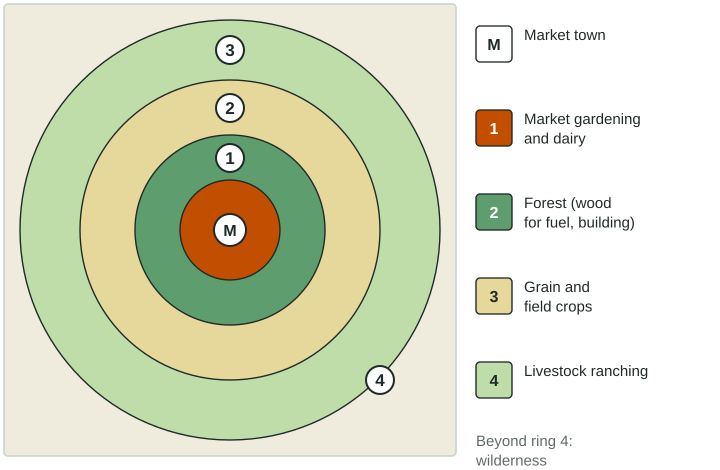
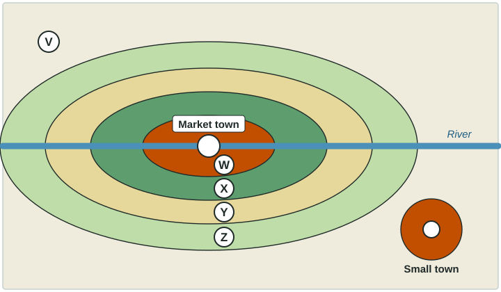

Von Thünen Model
The von Thünen model explains farm land use by the cost of transport to one market, producing rings of market gardening and dairy, forest, grain and ranching.
Part 1 · Hook
Why this matters
Part 2 · Before you start
What this builds on
Part 3 · Prerequisite check
Quick check before you start
1. According to bid-rent theory, which land use usually takes land closest to a market?
- The use that can pay the most rent there
- The use that needs the most land
- The use with the cheapest transport
- The use that earns least per hectare
Show the answer
Land goes to the highest bidder; near the market that is an intensive, high-earning use.
- Correct: The use that can pay the most rent there:
- The use that needs the most land:
- The use with the cheapest transport:
- The use that earns least per hectare:
2. Which is an extensive kind of agriculture?
- Ranching
- Market gardening
- Dairy farming near a city
- Greenhouse vegetables
Show the answer
Ranching spreads few inputs over large areas.
- Correct: Ranching:
- Market gardening:
- Dairy farming near a city:
- Greenhouse vegetables:
Part 4 · See it
See it first

Part 5 · Step by step
How it works, step by step
- Every product must be hauled to one market by carttransport cost rises with distance
- Transport cost rises with distancethe rent each use can pay falls with distance, fastest for heavy or perishable goods
- Each farmer picks the use that pays most at that distanceland use forms rings: dairy and gardens, forest, grain, then ranching
- Refrigeration, fast transport and many markets change transport costsreal land use breaks the neat rings
Part 6 · Key ideas
Key ideas
- The von Thünen model (1826) explains rural land use by transport cost to one market. Rings from the center: market gardening and dairy, forest, grain and field crops, livestock ranching; wilderness beyond.
- Assumptions: one isolated market, a flat and uniform plain, transport by cart in every direction, profit-seeking farmers. A river stretches the rings along it.
- Limits: refrigeration and air freight, specialty farming regions (Kenyan flowers, Chilean fruit), many markets, uneven land.
Part 7 · Misconception
A common mistake
The wrong idea: Forest is the outer ring of the von Thünen model, because trees grow on unused land.
What actually happens: Forest is ring 2. In 1826 towns needed heavy wood every day for fuel and building, and hauling it was costly, so it was grown close to the market.
Part 8 · Check yourself
Check yourself
Exam-style questions. Anything you miss goes into your review queue.
Image
Land use around an invented market town with a river

1. According to the von Thünen model, which land use belongs in zone W?
- Market gardening and dairy
- Forest for fuel and building
- Grain and field crops
- Livestock ranching
Show the answer
Zone W touches the market town, so it holds the ring that loses value fastest with distance: market gardening and dairy.
- Correct: Market gardening and dairy: Right: perishable, heavy products such as milk and vegetables go closest to the market town.
- Forest for fuel and building: Forest is the second ring, zone X.
- Grain and field crops: Grain is the third ring, zone Y.
- Livestock ranching: Ranching is the outermost farming ring, zone Z.
2. Why are the zones stretched far along the river instead of forming circles?
- The soil far from the river is richer, so the farms crowd in there instead
- Farmers by the river grow food to eat, not to sell
- River shipping cost less, so riverside farms reached market cheaply
- The river floods, so no farms can be built near it
Show the answer
Von Thünen himself showed this case: a navigable river lowers transport cost along its banks, so each ring stretches out along it.
- The soil far from the river is richer, so the farms crowd in there instead: The model holds soil the same everywhere; the river changes transport cost.
- Farmers by the river grow food to eat, not to sell: The model is about farms selling to the market town.
- Correct: River shipping cost less, so riverside farms reached market cheaply: Right: cheaper transport along the river makes distant riverside land as good as closer land elsewhere.
- The river floods, so no farms can be built near it: The zones stretch along the river, so farming there is heavy, not absent.
3. In the model, what is the most likely use of area V?
- Market gardening, because it is the most profitable use
- Forest, because wood is light and cheap to haul over long distances
- Dairy, because milk keeps for weeks without cooling
- Wilderness, too far for farm goods to pay their way to market
Show the answer
The outer edge of the model is wilderness: land so far away that no product can pay its transport to market.
- Market gardening, because it is the most profitable use: Market gardening goes closest to the market; at V its produce would spoil and cost too much to ship.
- Forest, because wood is light and cheap to haul over long distances: In the model wood is heavy and costly to haul, which is why forest is ring 2.
- Dairy, because milk keeps for weeks without cooling: In the 1820s milk spoiled within days, so dairying stayed next to the market.
- Correct: Wilderness, too far for farm goods to pay their way to market: Right: beyond the last ring, transport costs eat up all profit, so the land is left unfarmed.
4. What does the small town in the southeast show about a limit of the von Thünen model?
- Rings form around rivers and roads, not around the towns themselves
- Real regions have more than one market, each with its own rings
- Market gardening does not happen away from the main town
- Small towns are too small to have any farms near them
Show the answer
The model assumes an isolated state with one market. Where several towns exist, rings overlap and form around each one.
- Rings form around rivers and roads, not around the towns themselves: The small town has its own ring even though it is not on the river.
- Correct: Real regions have more than one market, each with its own rings: Right: the model assumes one market; a second town creates its own zone of intensive farming.
- Market gardening does not happen away from the main town: The small town shows market gardening around a second market.
- Small towns are too small to have any farms near them: The drawing shows an intensive zone around the small town.
5. Build the von Thünen model: place each land use in its ring, from the market outward.
Von Thünen rings around one market
- Ring 1 (innermost)
- Ring 2
- Ring 3
- Ring 4 (outermost)
Pick a piece, then the place it belongs. Drag works too. Pick a filled place to take its piece back.
Show the answer
From the center: market gardening and dairy, forest, grain and field crops, livestock ranching. Beyond ring 4 is wilderness.
- Ring 1 (innermost): Market gardening and dairy
- Ring 2: Forest (fuel and lumber)
- Ring 3: Grain and field crops
- Ring 4 (outermost): Livestock ranching
6. In the von Thünen model, why is forest in the second ring, close to the market?
- Wood for fuel and building was heavy and costly to haul
- Trees grow faster near markets than far away
- Wood spoils within days if not used
- Forests are protected by law near towns
Show the answer
Heavy, bulky goods with high transport cost need to be near the market, which is why forest comes right after market gardening.
- Correct: Wood for fuel and building was heavy and costly to haul: Right: in the 1820s, towns burned wood daily and moving it far by cart was costly.
- Trees grow faster near markets than far away: The model holds soil and climate the same everywhere.
- Wood spoils within days if not used: Wood keeps well; its problem was weight.
- Forests are protected by law near towns: The model explains land use by transport cost, not law.
Part 9 · Summary
Summary
Part 10 · Up next
What comes next
Part 11 · Connections